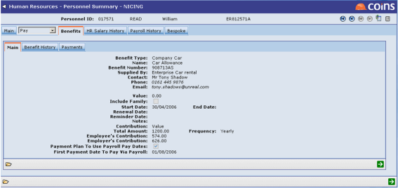
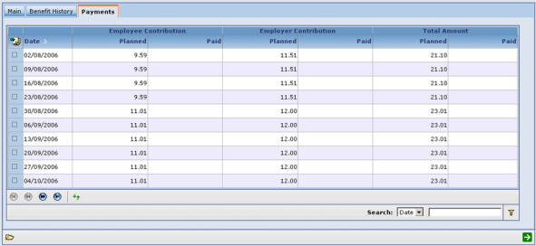
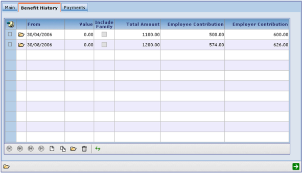
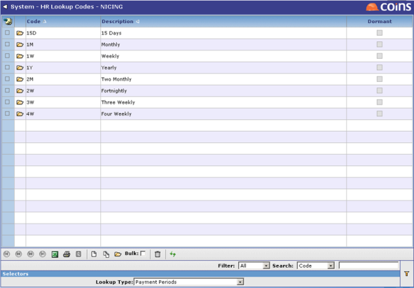

HR benefits can be paid directly by Payroll calculations.
If you want to pay a benefit to the linked Payroll employee directly using pay calculations set up within Payroll, enter a date in the First Payment Date To Pay Via Payroll field on the Main benefit details tab.

Setting this will cause a payment plan to be created which can then be seen on the Payments tab.

If the benefit contributions are specified by 'Value' then the payment plan will include payment amounts; if the contributions are 'Percentage' then the payment plan will consist solely of the payment dates (the amount to apply the percentage to not being known at this point).
To use the Payroll pay dates for benefit payments,
On the Benefit History tab there will be an entry for the start date of the benefit and current values for the contribution amounts. Any changes made to these amounts on the Main details tab will cause another benefit history record to be created. Benefit history records can also be added and updated manually. These affect the payment plan as can be seen in the screen below, where the contribution amounts changed from the 30/08/2006 onwards.

Benefit payment frequencies are set up using Lookup Codes as shown below. In order to be able to create the payment plan the codes must use a specific format which is a number followed by a letter, where the letter is one of D for days, W for weeks, M for months or Y for years. So for example 2W means 2 weeks, 1M means 1 month, etc. If the lookup code used on the benefit does not match this format no payment plan will be created.

To pay the benefit directly via the Payroll calculation, a pay calculation must be set up to get the value. The syntax to use is:
<item> is the item number giving the amount to use as the basis for the benefit calculation. It is used when the benefit contributions are of type 'Percentage'; it is ignored for type 'Value'. The next parameter should be EE for the employee contribution or ER for the employer contribution. <benefit types> is optional and if used should be a list of benefit types to include. These types are the lookup code values for the benefit type.
So for example _HRBEN_150_EE would evaluate to the sum of all the employee contributions due to be paid for the HR person linked to the Payroll employee whose pay is being calculated. Note that if you use this technique for paying benefits then any changes made by HR will be picked up automatically by the Payroll calculation without any approval step by Payroll staff. If you need Payroll staff to approve any changes before payments are made you should use the existing HR-Payroll linking of benefits values via the HR Requests Workbench instead.